Dual-Slope Imaging
Dual-Slope Imaging
Design of a Dual-Slope Imaging Array
Discovering Dual-Slope Sets
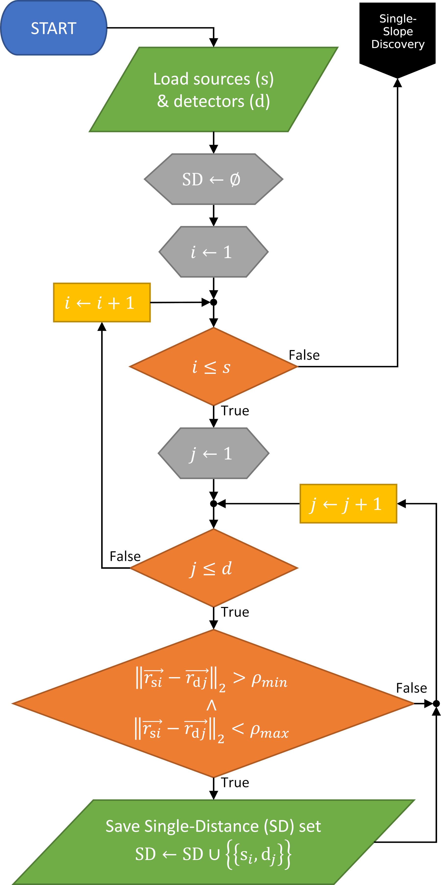
Note 1: Can be found as Figure 1 in .
Note 2: Implemented in Listing [lst:SDdis].
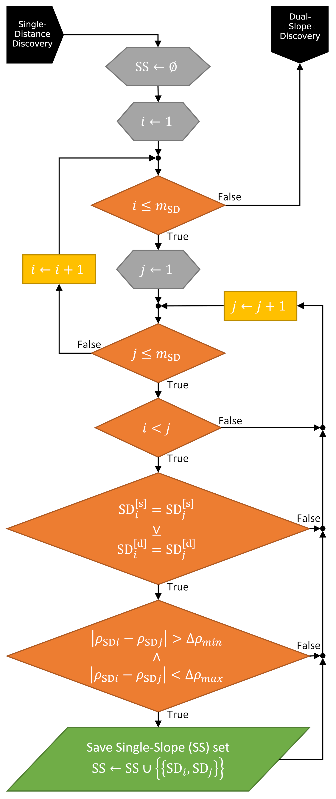
Note 1: Can be found as Figure 2 in .
Note 2: Implemented in Listing [lst:SSdis].
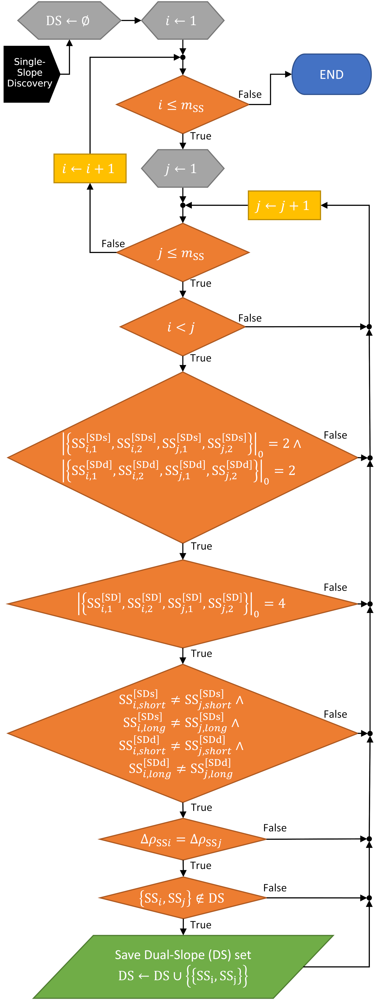
Note 1: Can be found as Figure 3 in .
Note 2: Implemented in Listing [lst:DSdis].
To design a DS imaging arrangement we required a succinct set of methods that enforced the requirements and constraints stated in Section [ch:DSintro:sec:DSoverview]. We start with a pen and paper design of a configuration that is suitable to create many DS sets as in . Then, we use a DS set discovery algorithm which takes the source and detector r⃗s as inputs. This algorithm finds all the possible DS sets that meet the requirements and constraints.
The algorithm starts by finding all the possible SD sets within a source-detector arrangement (Figure 1.1). This is trivial given that \(s\) sources and \(d\) detectors result in \(s\times d\) possible SD sets. However, the algorithm then eliminates sets according to 1 check:
Sets are eliminated that do not meet the minimum and maximum ρ constraints (20 mm, & 40 mm, respectively; Constraint [enu:DSconRho] in Section [ch:DSintro:sec:DSoverview]).
This results in all SD sets that meet the ρ constraints within the arrangement (and their number \(m_{\text{\acrshort{SD}}}\)). This portion of the algorithm is implemented with MATLAB code in Listing [lst:SDdis].
Then the algorithm moves on to find all the possible SS sets (Figure 1.2). This is done by looping through every combination of two different SD sets (\(m_{\text{\acrshort{SD}}} \times \left(m_{\text{\acrshort{SD}}}-1\right) \times 2\) combinations). For each possible combination of SD sets 2 checks are done to ensure the combination forms a valid new SS set:
An exclusive or (id est
xor) that the sourcesxorthe detectors are the same for the two SD sets (id est the SD sets share a source or a detector but not both; Requirement [enu:DSreqSSs] in Section [ch:DSintro:sec:DSoverview]).The difference in ρs (\(\Delta\acrshort{rho}\)) between the two SD sets meets the minimum and maximum consideration (10 mm, & 20 mm, respectively; Constraint [enu:DSconDelRho] in Section [ch:DSintro:sec:DSoverview]).
This step results in all the possible SS measurements in the arrangement (and their number \(m_{\text{\acrshort{SS}}}\)). This second part of the algorithm is implemented using MATLAB code in Listing [lst:SSdis].
Finally, the algorithm finds all the possible DS sets within the arrangement (Figure 1.3). Again, a loop is entered that loops through all combinations, this time of SS sets which are not the same (\(m_{\text{\acrshort{SS}}} \times \left(m_{\text{\acrshort{SS}}}-1\right) \times 2\) combinations). For each SS combination 5 checks are done to ensure that the two SS sets form a new valid DS set:
That between the 2 SS sets there are exactly 2 unique sources and 2 unique detectors (related to Requirements [enu:DSreqSSs]&[enu:DSreqShrtLng] in Section [ch:DSintro:sec:DSoverview]).
That between the 2 SS sets (4 SD sets) there are no repeated source-detectors pairs (id est there are four unique SD sets; related to Requirements [enu:DSreqSSs]&[enu:DSreqShrtLng] in Section [ch:DSintro:sec:DSoverview]).
Between the two SS sets the sources/detectors that make up the shorter/longer SD measurement are not the same (id est no source or detector is used for the long or the short measurement more than once; Requirement [enu:DSreqShrtLng] in Section [ch:DSintro:sec:DSoverview]).
The difference between the SD ρs (\(\Delta\rho\)) for each SS set that comprise the DS set are the same (Requirement [enu:DSreqDelRho] in Section [ch:DSintro:sec:DSoverview]).
The DS set found at each iteration is new and has not already been found in a previous iteration.
The result of the algorithm is to identify all possible DS sets in the arrangement (and their number \(m_{\text{\acrshort{DS}}}\)). Finally, this last part of the algorithm is implemented with MATLAB code in Listing [lst:DSdis].
The realization of this algorithm allows for the automatic discovery of DS sets from any list of source and detector r⃗. The various checks ensure the DS requirements are met, however there are also tunable parameters that allow the constraints to be changed (minimum ρ from Constraint [enu:DSconRho] in Section [ch:DSintro:sec:DSoverview] et cetera). The algorithm has a run time of approximately 200 ms (for 10 detectors and 16 sources) on a CPU with clock speed of 2.6 GHz and 8 of RAM. Furthermore it can be used to iteratively refine the position of the sources and detectors by rearranging them (using different starting points) or applying position refinement (discussed in the following sections) and finding the new possible DS sets over the multiple iterations.
Refining a Dual-Slope Array
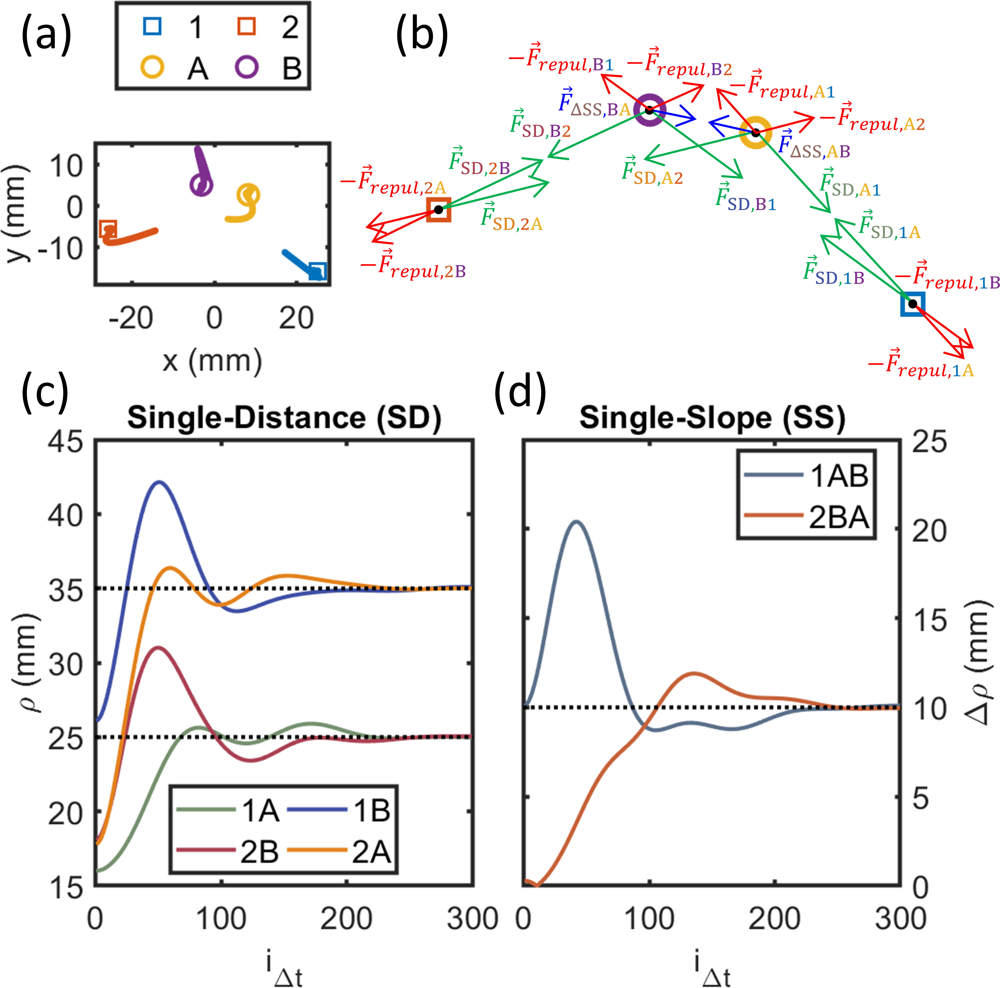
1 and
2) and detectors (A and B) after
random start positions, showing their trajectories as lines and final
positions as symbols. (b) Free body diagram of all forces acting on
sources and detectors. (c) Evolution of the 4 SD .
(d) Evolution of the two SS ρ
differences (\(\Delta\acrshort{rho}\)).Note 1: This chart can be found as Figure 4 in .
Once all the DS sets for an arrangement have been identified, the exact positions of the sources and detectors are refined. This is done by introducing simulated forces between elements acting such that desired parameters of the DS sets are met. The dynamical system is then allowed to reach equilibrium through Euler’s method for solving a system of ordinary differential equations, and the new coordinates of the sources and detectors are saved (Figure 1.4). Such a system can also be used to find valid source-detector arrangements that meet the DS requirements from random starting positions of the sources and detectors which is seen in Figure 1.4.
4 parameters control the final positions in the system:1
The nominal ρ for the short leg of a SS set (\(\acrshort{rho}_{0,s}\)).
The nominal ρ for the long leg (\(\acrshort{rho}_{0,l}\)).
The nominal difference between ρs in a SS set (\(\Delta\rho_0\)).
The minimum source-detector separation (\(\acrshort{rho}\acrshort{rho}_{min}\)).
The final arrangement will have DS sets with ρs as close to their nominal values as possible given the overall connections between the elements of the arrangement, and the minimum separation ensures no detector will be saturated by a close source. Other than the 4 parameters above, another 5 parameters control the dynamics of the simulation and how the equilibrium is reached:2
The element mass (\(\mathfrak{M}\); [mass]).
The spring constant (\(\mathfrak{K}\); [mass time−2 or force length−1]).
The damping ratio (\(\zeta\); [-]).
The repulsion coefficient (\(\xi\); [mass length2 time−2 or energy]).
The time step (\(\Delta t\); [time]).
\(\zeta\) controls the damping coefficient (\(\mathfrak{D}=2\zeta\sqrt{\mathfrak{KM}}\) [mass time−1]) which is set to slightly below 1 to cause a slight under-damping, thus allowing the system to converge.
The above parameters are used to control 4 forces that act upon each source and detector which are combined using Newton’s second law of motion (Figure 1.4(b)): \[\mathfrak{M}\ddot{\acrshort{r}}=\Sigma{\vec{F}}_{\text{\acrshort{SD}}}+\Sigma{\vec{F}}_{\Delta \text{\acrshort{SS}}}+\Sigma{\vec{F}}_{repul}+{\vec{F}}_{damp} \label{equ:posRefEOM}\] where, \(\ddot{\acrshort{r}}\) is the acceleration vector for a given element, \({\vec{F}}_{\text{\acrshort{SD}}}\) is the SD force, \({\vec{F}}_{\Delta \text{\acrshort{SS}}}\) is the SS difference in ρ force, \({\vec{F}}_{repul}\) is the repulsion force, and \({\vec{F}}_{damp}\) is the damping force. We note that the key force in this method encouraging the creation of DS sets is \({\vec{F}}_{\Delta \text{\text{SS}}}\), which, when applied to symmetric SSs, causes the arrangement to converge to a valid DS arrangement. The use of this force in this way makes this method novel and specific to DS.
The SD force causes sources and detectors to be attracted to positions that will create ρ close to the nominal values (\(\acrshort{rho}_{0,s}\) or \(\acrshort{rho}_{0,l}\)): \[{\vec{F}}_{\text{\acrshort{SD}}}=\mathfrak{K}(\|\acrshort{r}_{\text{\acrshort{SD}}}\|-\rho_0)\hat{r}_{\text{\acrshort{SD}}}\] where, \(\|\acrshort{r}_{\text{\acrshort{SD}}}\|\) is the Euclidean distance between the element considered and its pair, \({\hat{r}}_{\text{\text{SD}}}\) is the unit vector pointing from the element to its pair, and \(\rho_0\) is the nominal distance between the elements (\(\rho_{0,s}\) or \(\rho_{0,l}\), depending on whether the SD pair is the short or long distance pair in a SS set).
The SS difference force causes
SS sets to be attracted to
configurations that have a difference in the ρs
close to the nominal value (\(\Delta\acrshort{rho}_0\)): \[{\vec{F}}_{\Delta\text{\acrshort{SS}}}=\mathfrak{K}(|\|\acrshort{r}_{\text{\acrshort{SD}}2}\|-\|\acrshort{r}_{\text{\acrshort{SD}}1}\||-\Delta\acrshort{rho}_0)\hat{r}_{\Delta\text{\acrshort{SS}}}\]
where, \(\acrshort{r}_{\text{\acrshort{SD}}1}\) and
\(\acrshort{r}_{\text{\acrshort{SD}}2}\) are
the Euclidean norms of source-detector displacement vectors for the two
SD pairs, and \({\hat{r}}_{\Delta\text{\acrshort{SS}}}\) is
the unit vector pointing from the element considered to the element of
the SS set of the same type. For
example, for a common source SS set that contains one
source and two detectors (A and B), there will
be a \({\hat{r}}_{\Delta\text{\acrshort{SS}}}\)
pointing from A to B which controls the force
that acts upon A, and vice versa for B. Thus,
each SS set creates 2 \({\vec{F}}_{\Delta\text{\acrshort{SS}}}\)
forces which act on the non-common element types in the set.
Additionally, if 2 SS sets form a DS
set, the symmetric nature of the requirements creates resulting
SS differences forces that
encourage the DS requirements to be
met.
The repulsive force pushes sources and detectors apart such that detectors will not become saturated by near sources. The force only activates if sources and detectors get closer than the minimum distance (\(\rho_{min}\)): \[\begin{split} {\vec{F}}_{repul}=\xi \left(\frac{1}{\acrshort{rho}_{min}}-\frac{1}{\|\acrshort{r}_{repul}\|}\right)\\ \times H\left(\acrshort{rho}_{min}-\|\acrshort{r}_{repul}\|\right)\hat{r}_{repul} \end{split}\] where, \(\|\acrshort{r}_{repul}\|\) is the Euclidean distance between the element and its repulsor, \(H\) is the Heaviside step function, and \({\hat{r}}_{repul}\) is the unit vector pointing from the element its repulsor.
Finally, the damping force creates non-conservation friction within the system allowing for convergence: \[{\vec{F}}_{damp}=-\mathfrak{D}\dot{\acrshort{r}}\ \] where \(\dot{\vec{r}}\) is the velocity vector. Euler’s method with a step of \(\Delta t\) is used to iteratively solve Equation[equ:posRefEOM] finding the r⃗ of each source and detector at each time step. When the system converges to equilibrium, the new positions of the arrangement elements are saved, and the arrangement is optimized for the desired nominal distances. Furthermore, the DS set discovery algorithm may be run again in the case of iterative design.
Aside from the automated refinement, manual refinement may also be conducted. This manual refinement would be informed by the evaluation results of the array that will be discussed in the following sections. Essentially, any DS will go through many design iterations using all of the aforementioned and to be mentioned methods before it is actually constructed.
Image Reconstruction
The Sensitivity Matrix
The first step for image reconstruction is to determine the 𝒮 maps for each measurement in a given array. This is done using the methods in Appendix [app:senMaps]. Remember 𝒮 can be interpreted using Equation [equ:sen_dmua] which shows each 𝒮 value being related on two things. First, is the particular measurement (\(i\) in Equation [equ:sen_dmua]), second, is the perturbation r⃗ within the diffuse medium (\(\vec{r}_j\) in Equation [equ:sen_dmua]). Therefore, we can define a \(m\times v\) 𝒮 for a given imaging array with \(m\) measurements and \(v\) voxels in the imaged medium: \[\begin{split} \acrshort{senMat}=\\ \begin{bmatrix} \acrshort{sen}_1\left(\acrshort{r}_1\right) & \cdots & \acrshort{sen}_1\left(\acrshort{r}_j\right) & \cdots & \acrshort{sen}_1\left(\acrshort{r}_v\right) \\ \vdots & \ddots & \ddots & \ddots & \vdots \\ \acrshort{sen}_i\left(\acrshort{r}_1\right) & \ddots & \acrshort{sen}_i\left(\acrshort{r}_j\right) & \ddots & \acrshort{sen}_i\left(\acrshort{r}_v\right) \\ \vdots & \ddots & \ddots & \ddots & \vdots \\ \acrshort{sen}_m\left(\acrshort{r}_1\right) & \cdots & \acrshort{sen}_m\left(\acrshort{r}_j\right) & \cdots & \acrshort{sen}_m\left(\acrshort{r}_v\right) \\ \end{bmatrix} \end{split}\] Now considering a so-called apparent \(m \times 1\) Δμ⃗a that is measured by the array and a \(v \times 1\) Δμ⃗a of so-called actual voxel values, we can write following forward model based off Equation [equ:sen_dmua]: \[\acrshort{dmuaVec}_{,apparent}=\acrshort{senMat}\acrshort{dmuaVec}_{,actual} \label{equ:senMatForward}\]
Image reconstruction will focus on inverting Equation [equ:senMatForward]. Given that \(\Delta\vec{\mu}_a_{,apparent}\) is what we have and we can calculate 𝒮 (Appendix [app:senMaps]), the inversion will be finding an inverse for 𝒮 which multiplied by \(\Delta\vec{\mu}_a_{,apparent}\) gives us \(\acrshort{dmuaVec}_{,actual}\) (Equation [equ:senMatInverse]). It is worth noting that since \(m<<v\) in these imaging problems, there will be many \(\acrshort{dmuaVec}_{,actual}\) which satisfies Equation [equ:senMatForward]. Whatever inverse is chosen will find the \(\acrshort{dmuaVec}_{,actual}\) which meets some properties according to the inverse. Since this so-called recovered Δμ⃗a will not be unique, we will not call the particular one retrieved \(\acrshort{dmuaVec}_{,actual}\) since it is almost certainly not the actual Δμ⃗a. Therefore, we will called the particular reconstructed \(v\time 1\) Δμ⃗a from the inverse, the recovered (id est \(\acrshort{dmuaVec}_{,recovered}\)).
The Moore-Penrose Inverse
To invert Equation [equ:senMatForward] we have chosen the MP . This retrieves the \(\acrshort{dmuaVec}_{,recovered}\) with the lowest Euclidean norm of all Δμ⃗a that would satisfy the forward model (Equation [equ:senMatForward]). As is convention, we use a superscript \(+\) to represent this inverse as follows: \[\acrshort{dmuaVec}_{,recovered}=\acrshort{senMat}^+\acrshort{dmuaVec}_{,apparent} \label{equ:senMatInverse}\]
The MP can be formulated in various ways, and may or may not include Tikhonov regularization, which aids in smoothing noise in the measurement. The typical matrix formulation of the Moore-Penrose pseudoinverse with Tikhonov regularization is as follows : \[\acrshort{senMat}^+=\acrshort{senMat}^T\left(\acrshort{senMat}\acrshort{senMat}^T+\mathfrak{a}\mathbf{I}\right)^{-1}\] where the \(T\) superscript is transpose, the \(-1\) superscript is the matrix inverse, \(\mathbf{I}\) is the identity matrix, and: \[\mathfrak{a}=a_{tik}\times\max{\left(diag\left(\acrshort{senMat}\acrshort{senMat}^T\right)\right)}\] where \(\mathfrak{a}\) is the Tikhonov regularization parameter which scales with the maximum singular value of 𝒮, and \(a_{tik}\) is a tunable parameter which should be chosen based on the noise in the measurement to optimize signal-to-noise against smoothing in the reconstructed image.
The MP can also be formulated in terms of the SVD of 𝒮: \[\acrshort{senMat}=\mathbf{U}\mathbf{\Sigma}\mathbf{V}^T \label{equ:SwithSVD}\] \[\mathbf{\Sigma}= \begin{bmatrix} \sigma_1 & 0 & 0 & 0 & 0 & \cdots & 0 \\ 0 & \ddots & 0 & 0 & 0 & \cdots & 0 \\ 0 & 0 &\sigma_k & 0 & 0 & \cdots & 0 \\ 0 & 0 & 0 & \ddots & 0 & \cdots & 0 \\ 0 & 0 & 0 & 0 & \sigma_m & \cdots & 0 \\ \end{bmatrix}\] where \(\mathbf{U}\) is the \(m\times m\) matrix of left singular vectors of 𝒮, \(\mathbf{V}\) is the \(v\times v\) matrix of right singular vectors of 𝒮, and \(\mathbf{\Sigma}\) is the diagonal \(m\times v\) matrix of \(m\) singular values (\(\sigma_k\)) of \(\mathbf{S}\). Using the SVD of 𝒮, the MP without Tikhonov regularization is formulated as follows : \[\acrshort{senMat}^+=\mathbf{V}\mathbf{\Sigma}^{-1}\mathbf{U}^T \label{equ:MPwithSVD}\] the inverse of the non-square \(\mathbf{\Sigma}\) has the trivial expression: \[\mathbf{\Sigma}^{-1}= \begin{bmatrix} \frac{1}{\sigma_1} & 0 & 0 & 0 & 0 \\ 0 & \ddots & 0 & 0 & 0 \\ 0 & 0 & \frac{1}{\sigma_k} & 0 & 0 \\ 0 & 0 & 0 & \ddots & 0 \\ 0 & 0 & 0 & 0 & \frac{1}{\sigma_m} \\ \vdots & \vdots & \vdots & \vdots & \vdots \\ 0 & 0 & 0 & 0 & 0 \\ \end{bmatrix}\] Here we note possible instability in the calculation of the MP if there are singular values that are close to zero. This is related to the κ discussed in further sections.
Depending on the application and need, either formulation of the MP may be helpful. In the scope of this chapter we use both to examine and understand characteristics of the 𝒮 for a given DS optical array and understand how the image reconstruction will behave. This understanding is used to inform the imaging array design process.
Evaluation of a Imaging System Using the Moore-Penrose Inverse
Given various DS arrays we need a way to specify the performance of different arrangements to choose the most effective for imaging. This is done by examining the imaging system in terms of the MP for image reconstruction. The following discussions assume no regularization. Substituting Equation [equ:senMatForward] into Equation [equ:senMatInverse] yields: \[\acrshort{dmuaVec}_{,recovered}=\acrshort{SpSMat}\acrshort{dmuaVec}_{,actual} \label{equ:SpS}\] where the \(v\times v\) 𝒮⁺𝒮 is the key operator that transforms the actual absorption perturbation vector into the recovered one. In the ideal case where the matrix 𝒮⁺𝒮 is the identity matrix, the image reconstruction would be perfect. This requires the MP to be equal to the true inverse which implies that 𝒮 is a square matrix (id est \(m=v\), same number of voxels as measurements). This can be achieved by choosing a medium voxelization with only \(m\) voxels and reconstructing equivalent absorption changes for those large voxels. However, this would require uniform absorption properties across such large voxels, and the use of a 𝒮 that reflects the size of such large voxels. Furthermore, the goal of imaging is to reconstruct maps of absorption perturbations with a fine voxel grade to represent arbitrary shapes of optical perturbations. Thus, we will focus on cases where \(v>>m\) and we examine ways to specify how close 𝒮⁺𝒮 is to the identity matrix.
Maps Evaluating Array Performance
Reconstruction and Cross-Talk Maps
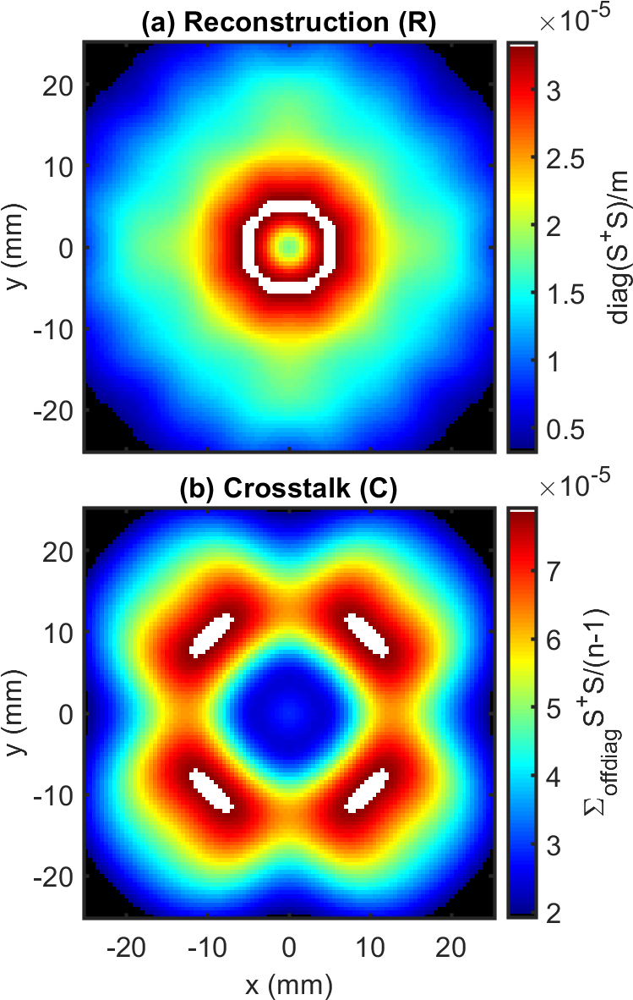
Note 1: This figure can be found as Figure 8 in .
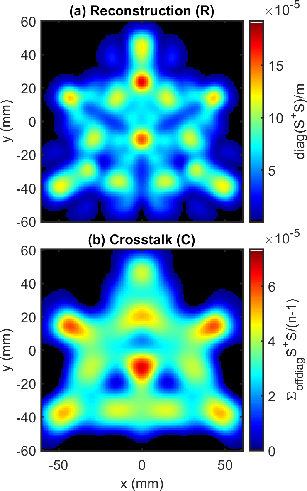
Note 1: This figure can be found as Figure 9 in .
The first method we use to examine 𝒮⁺𝒮 is by producing the ℛ⃗ which can be visualized in a voxelated map. This vector is defined as: \[\acrshort{Recon}=\frac{diag\left(\acrshort{SpSMat}\right)}{m}\] where, the diagonal elements of 𝒮⁺𝒮 are normalized by \(m\) since the trace of 𝒮⁺𝒮 is equal to \(m\) . This normalizes ℛ⃗ such that the sum of its elements is equal to 1. The ℛ⃗ map (made of the \(v\) values of the reconstruction vector elements for the \(v\) voxels) shows the weight with which the imaging system reconstructs an actual perturbation into its true voxel (higher values are better). In the ideal case, the vector’s elements would be all ones. Visualizing the ℛ⃗ map shows which parts of the medium will reconstruct perturbations well.
Examples of these ℛ⃗ and 𝒞⃗ maps can be seen in Figures 1.5&1.6. These show the maps for two different array designs (Figures 1.12&1.11) which will be discussed in further sections.
The second map which is used to visualize 𝒮⁺𝒮 compared to the identity is the 𝒞⃗. This vector is defined as: \[\acrshort{Cross}=\frac{\acrshort{SpSMat}\harp{1}-diag\left(\acrshort{SpSMat}\right)}{v-1}\] where, \(\harp{1}\) is the \(v\times 1\) vector of ones. Conceptually the elements of the cross-talk vector are the average of the off-diagonal elements of 𝒮⁺𝒮 for each row. The \(v\) values of the cross-talk vector elements indicate the average weight with which actual perturbations elsewhere in the medium are reconstructed to a given voxel (lower values are better). In the ideal case, 𝒞⃗ would be a vector of zeros. When visualized as a map it shows where the imaging system will reconstruct actual perturbations in the incorrect voxel.
Resolution and Localization Maps
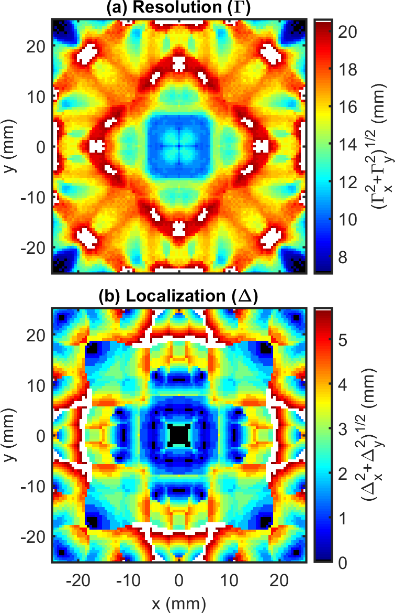
Note 1: This figure can be found as Figure 10 in .
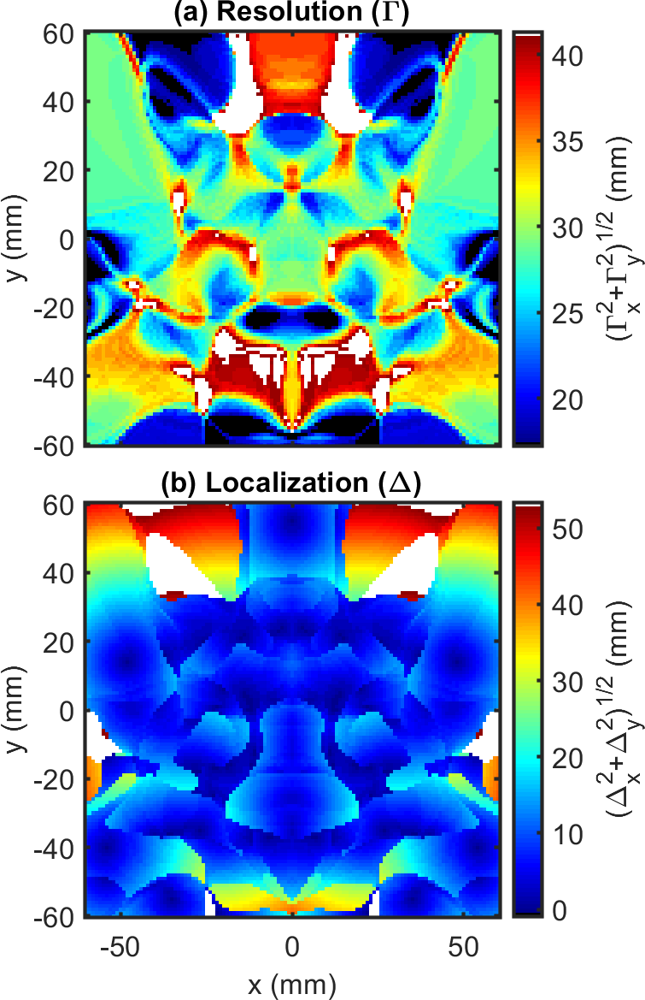
Note 1: This figure can be found as Figure 11 in .
Determining the resolution and offset (localization) of reconstructed perturbations can be done efficiently by considering 𝒮⁺𝒮 as a matrix of unit voxel impulse response vectors. This can be seen by examining Equation [equ:SpS], and considering a \(\acrshort{dmuaVec}_{,actual}\) that contains all zeros except a 1 in element \(j\) (a unit perturbation only in voxel \(j\)). Then \(\acrshort{dmuaVec}_{,recovered}\) will be the \(j\)th column of 𝒮⁺𝒮. Thus, 𝒮⁺𝒮 contains the response vectors (in its rows and columns since it is symmetric) for a unit perturbation in each voxel. In this section, we discuss efficient ways to calculate resolution and localization maps in MATLAB. However, the methods could be adapted to other programming languages.
For notation, we introduce the Γ and the Δ as follows: \[\acrshort{Res}=\left[\harp{\Gamma}_x, \harp{\Gamma}_y, \harp{\Gamma}_z\right]\] \[\acrshort{Loc}=\left[\harp{\Delta}_x, \harp{\Delta}_y, \harp{\Delta}_z\right]\] where Γ and Δ are both \(v\times 3\) matrices containing the map of resolution or localization in each coordinate direction (3 columns for the coordinate directions \(x\), \(y\), and \(z\)). For example, the \(j\)th element of \(\harp{\Gamma}_x\) (\(\harp{\Gamma}_{x,j}\)) is the reconstructed FWHM resolution along \(x\) for a perturbation in voxel \(j\). Additionally, the \(j\)th element of \(\harp{\Delta}_x\) (\(\Delta_{x,j}\)) is the offset between the actual perturbation location and the reconstructed maximum location along \(x\) for a perturbation in voxel \(j\).
"
For computation of these matrices in MATLAB, we must consider the data format. 𝒮⁺𝒮 ("SpS") has size \(v\times v\) ("[n,n]=size(SpS)" in MATLAB), but we want to consider the response maps in a 3D coordinate system. Thus, "SpS" is reshaped as follows:
SpS_grid2=reshape(SpS,...
[ny,nx,nz,ny,nx,nz]);where, "nx", "ny", and "nz" are the number of voxels in the \(x\), \(y\), and \(z\) directions, respectively. Now, "SpS_grid2" is a 6D array, where the first 3 dimensions can index a perturbation location and the remaining 3D array is the reconstructed map (note switching the indexing to the last three would produce the same result since "SpS" is symmetric). For example:
reconMap=squeeze(...
SpS_grid2(iy,ix,iz,:,:,:));where "reconMap" is the 3D array of the reconstructed map for a unit perturbation at voxel "[iy,ix,iz]". The resolution and localization are computed for each of the 3 dimensions. Thus, first we find the linear reconstruction along the axis of interest (\(x\) shown here):
Mrcn_gridx=sum(sum(...
SpS_grid2,4),6);where "Mrcn_gridx" is the 4 non-singular-dimension array containing the linear reconstruction (along the 5th dimension) for a perturbation in every voxel location (first 3 dimensions). This is obtained by summing the 3D reconstructed maps along the \(y\) and \(z\) directions (4th and 6th dimension). The same method can be used for the other 2 directions by summing over different indices. With 𝒮⁺𝒮 in this form we can now quickly find the resolution and localization maps along each dimension.
We define the resolution in terms of the FWHM which can be computed in one line using the data structured in this way (\(x\) direction shown):
Gamma_x=sum(...
Mrcn_gridx>=...
(max(Mrcn_gridx,[],5)/2),...
5)*dx;where "Gamma_x" is \(\harp{\Gamma}_x\) reshaped to be a 3D map and "dx" is the voxel pitch in the \(x\) direction. Similar reasoning follows for the other two directions.
For the localization map we must first create a 3D array of actual perturbation location indices in each dimension for every voxel location (\(x\) direction shown):
[~,XX,~]=meshgrid(1:ny,1:nx,1:nz);where, "XX" is the 3D array of the \(x\) indices of the actual perturbation location for a perturbation in every possible location in 3D. Next, the indices of the reconstructed maxima must be found (again for the \(x\) direction):
[~,maxInds_x]=max(Mrcn_gridx,...
[], 5);where, "maxInds_x" is the 3D array with the \(x\) index of the maximum of the reconstructed image for an actual perturbation in every voxel location. Finally, we can compare "XX" to "maxInds_x" to find the localization map:
Delta_x=(maxInds_x-XX)*dx;where, "Delta_x" is \(\harp{\Delta}_x\) reshaped to be a 3D array for visualization. As before the same process can be used to find the \(y\) and \(z\) direction.
"
Examples of these ℛ⃗ and 𝒞⃗ maps can be seen in Figures 1.7&1.8. These show the maps for two different array designs (Figures 1.12&1.11) which will be discussed in further sections.
The full MATLAB function that finds these maps for all three dimensions in shown in Listing [lst:ResLoc]. The simplicity of this method is quite impressive given that the typical approach for calculation of Γ and Δ is to simulate perturbations are various locations using loops over the whole medium. For this reason, this method has the advantage of speed, but the disadvantage of needing to store 𝒮⁺𝒮 in RAM.
Condition Number
There are also scalar values that can be used to evaluate the imaging effectiveness of 𝒮. One value is the κ of 𝒮, which represents the instability of the imaging system. The κ is defined as: \[\acrshort{kappa}=\|\acrshort{senMat}\|\|\acrshort{senMat}^+\|\] where smaller κ is better, meaning a more stable system . In this work we use the \(\ell_2\)-norm for our discussion but the condition number can be defined with any norm that is desired. For comparison, in the best case of Gaussian random sampling, \(\acrshort{kappa}=\mathcal{O}\left(1\right)\). But in the worst case of a singular 𝒮, \(\acrshort{kappa}=\infty\).
Singular Value Decomposition and Singular Vectors

Note 1: This figure can be found as Figure 12 in .
We can also think of the MP it in terms of SVD. Equation [equ:MPwithSVD] shows this SVD based formulation, so we may now revisit 𝒮⁺𝒮 and κ from a different perspective. Combining Equations [equ:SwithSVD]&[equ:MPwithSVD] yields: \[\acrshort{SpSMat}=\mathbf{V}\mathbf{\Sigma}^{-1}\mathbf{U}^T\mathbf{U}\mathbf{\Sigma}\mathbf{V}^T\] which can be simplified to: \[\acrshort{SpSMat}=\left[\harp{V}_1, \ldots, \harp{V}_m, \harp{0}, \ldots, \harp{0}\right]\mathbf{V}^T\] by the orthogonality of \(\mathbf{U}\) (id est \(\mathbf{U}^{-1}=\mathbf{U}^T\)) and the multiplication of \(\mathbf{\Sigma}^{-1}\) and \(\mathbf{\Sigma}\) which yields a \(n\times n\) matrix with 1 in the first \(m\) diagonal elements and 0 elsewhere. In the above equation, \(\harp{0}\) is an \(m\times 1\) vector of zeros of which there are \(v-m\) in the matrix within the brackets on the right-hand side. From this formulation, we can see that the imaging system matrix (id est 𝒮⁺𝒮) is completely formulated using the right singular vectors.
The importance of the right singular vectors of 𝒮 can be seen by applying Equation [equ:SpS]: \[\begin{split} \acrshort{dmuaVec}_{,recovered}=\\ \left[\harp{V}_1, \ldots, \harp{V}_m, \harp{0}, \ldots, \harp{0}\right]\mathbf{V}^T\acrshort{dmuaVec}_{,actual} \end{split}\] where, it can be seen by the orthogonality of \(\mathbf{V}\), that if \(\acrshort{dmuaVec}_{,actual}\) is any of the first \(m\) right singular vectors of 𝒮 (or any linear combination of them), then a perfect reconstruction will be achieved (id est \(\acrshort{dmuaVec}_{,recovered}=\mathbf{V}^T\acrshort{dmuaVec}_{,actual}\)). Conversely, if \(\acrshort{dmuaVec}_{,actual}\) is any of the last \(v-m\) right singular vectors, then a null reconstruction will be achieved (id est \(\acrshort{dmuaVec}_{,recovered}=\harp{0}\)). This means that \(\acrshort{dmuaVec}_{,recovered}\) is spanned by the vectors (\(\harp{V}_1, \ldots, \harp{V}_m\)). In other words, any reconstructed image must be some linear combination of the first \(m\) right singular vectors of 𝒮. This fact can be used to further evaluate the imaging system by visualizing these \(m\) vectors as maps in 3D space, keeping in mind that any image reconstructed by the system must be a linear combination of these maps. An example of a map of these singular vectors is shown in Figure 1.9 which corresponds to the array shown in Figure 1.11 which is discussed in the following sections.
We may also revisit the κ in terms of SVD. \(\mathbf{\Sigma}\) contains the \(m\) singular values of 𝒮 (\(\sigma_1, \ldots, \sigma_m\)). We consider the singular values ordered such that \(\sigma_1\) is the maximum singular value and \(\sigma_m\) is the minimum singular value. Therefore κ can also be expressed as [mathworksMATLABHelp2020]: \[\acrshort{kappa}=\frac{\sigma_1}{\sigma_m}\] showing that the κ (meaning the system stability) can be thought of as the ratio of biggest and smallest singular values. This suggests that a better conditioned system will have a set of singular values within a relatively small range, while an ill-conditioned system will have a large difference between the largest and smallest singular values. Therefore, yet another method for looking at the stability/condition of the imaging system is to examine the \(m\) singular values and noting how much they differ. For example, if the first \(m-1\) singular values have approximately the same order of magnitude but \(\sigma_m\) is near zero, the condition number of the system may be improved by ignoring a redundant measurement.
For better understanding of the use of singular values we may consider two simple examples with \(m=2\) and \(v=3\). First, we consider the case where one measurement is very weekly sensitive to the medium: \[\acrshort{senMat}= \begin{bmatrix} 1/3 & 1/3 & 1/3 \\ 0 & 0 & 10^{-6} \\ \end{bmatrix}\] Then \(\sigma_1=0.6\), \(\sigma_2=8\times{10}^{-7}\), and \(\acrshort{kappa}=7\times{10}^5\), showing that one measurement is problematic. Second, consider the case where the two measurements have close to the same sensitivity: \[\acrshort{senMat}= \begin{bmatrix} 1/3 & 1/3 & 1/3 \\ 1/3 & 1/3+10^{-6} & 1/3-10^{-6} \\ \end{bmatrix}\] Then \(\sigma_1=0.8\), \(\sigma_2=10^{-6}\) and \(\acrshort{kappa}=8\times{10}^5\), showing again there is a problematic measurement (because one measurement is redundant). We note that examining these values cannot be done blindly since their magnitudes are dependent on the specific reconstruction parameters being considered, and different issues may cause similar effects. However, examining singular values can provide guidance when combined with other evaluation methods or when comparing two similar array designs.
Constructing a Dual-Slope Array
Once a geometrical arrangement of source and detector locations has been determined, a design must be created that physically realizes it. Depending on the specifics of the NIRS instrument, the array may contain physical sources (laser diodes, light emitting diodes, et cetera) and detectors (photodiodes, avalanche photodiodes, et cetera), or it may contains optical fibers that deliver light to and from the investigated sample. In this work, we have used an Imagent NIRS instrument, which uses laser diodes and PMT detectors that are coupled to optical fibers. Specifically, the light sources are coupled to SMA terminated multi-mode optical fibers, whereas the optical detectors are coupled to ferrule terminated fiber bundles connected via a collet. For the detector fibers we use 2 m, 3 mm fiber bundles with 4.75 mm OD ferrules. 2 separate optical fibers, 1 for each of 2 λs 690 nm, & 830 nm, deliver light at each source location. To accomplish this, we use custom-built, 2 m long \(1 \times 2\) fan-out fiber bundles with 1 m ends. The optical fiber used was a 600 μm multi-mode fiber with furcation tubing jacket. The split ends are terminated in SMA connectors, and the common end is terminated in a custom drilled and polished 2.5 mm OD ferrule. Given these optical fiber terminations, the optical array was designed to arrange the 4.75 mm OD detector fibers and the 2.5 mm OD source fibers in the desired arrangement.
Fiber Array Design
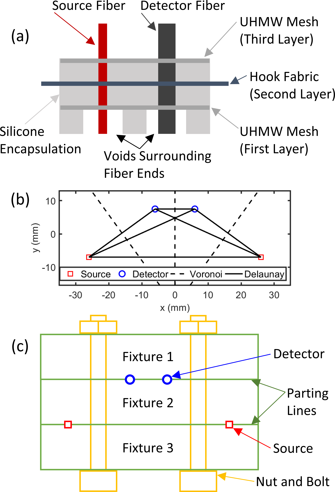
Note 1: This chart can be found as Figure 5 in .
Acronyms: Ultra High Molecular Weight polyethylene (UHMW).
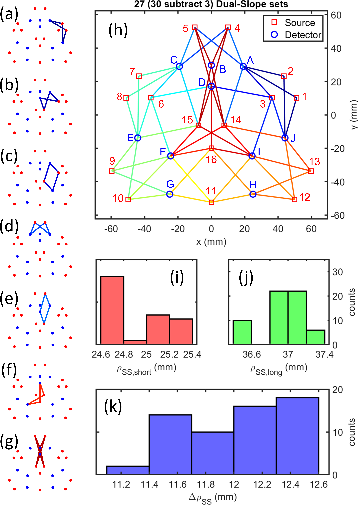
Note 1: This figure can be found as Figure 7 in .
The overarching design of the array was a three-layer mesh structure encapsulated in PDMS (id est silicone; Figure1.10(a)). The first and third layers of the array are constructed from UHMW film and the middle (second) layer is built from polypropylene hook and loop fabric. The PDMS used to encapsulate the array mixed with cII to pigment the array black.
The first and third UHMW mesh layers hold the fiber terminations in their place within the arrangement. The design methodology for the UHMW mesh is as follows:
Determine the locations of the source and detector ferrules.
At each ferrule location create a hole to accommodate the ferrule with a doughnut of UHMW surroundings it with a 14.5 mm OD (id est we now have toroidal islands of UHMW at each ferrule location).
Connect the centers of the doughnuts with a Dalaunay triangulation (Figure 1.10(b)), where each triangulation edge defines the center-line of a 5 mm wide UHMW connector.
The resulting mesh features circles of UHMW surrounding each ferrule with 5 mm wide connections between them. This design strategy creates an interconnected mesh which will hold the fibers in the arrangement locations. The fiber ferrules were epoxied to the UHMW mesh.
The middle layer of hook fabric is cut to remove as much material as possible, allowing the fibers to pass through the layer and PDMS to fully surround all the parts. Enough hook fabric remains to provide tension to the array when pulled, since this is the method with which the array will be attached to other components (such as a head cap). As such, the size of the hook fabric will overhang the array by 25 mm once it has been encapsulated with PDMS. Both the UHMW mesh and hook fabric are cut using a paper cutter.
Finally, after designing and constructing the various array layers, the assembly is encapsulated with PDMS. The first mesh layer is placed 5 mm from the ferrule ends, the second layer of hook fabric (hooks facing away from ferrule ends) is placed 5 mm from the first mesh, and the third layer of mesh is placed 5 mm above the hook fabric. Finally, the top of the PDMS is poured such that it is flush with the top of the third layer. This procedure results in a total array thickness of 15 mm. The outer perimeter of the array is such that it fully encapsulates the mesh layers and leaves a 25 mm hook fabric overhang. On the bottom of the optical array, there are voids in the PDMS surrounding each fiber ferrule to allow for the ferrules to push through hair (in the case of non-invasive applications on the human head). These negative spaces are 5 mm in height and their shape is defined using a Voronoi partition (Figure 1.10(b)) between the fiber locations. The edges of the partition are of a non-zero width such that each ferrule is 7.5 mm to the edge of its void, or the partition width is 5 mm, whichever creates a larger partition wall width. This creates a design with walls of PDMS separating all fiber locations ensuring that light diffuses through the medium being probed and does not leak across the surface.
Fiber Array Construction Methods
To realize the array design, the structure of the array is built using a mold that holds all components in place while the PDMS is poured over the array. The general design of the array mold consists of a series of fixtures that bolt together such that the fiber ferrules are placed along the parting lines of the fixtures that are assembled to create the mold (Figure 1.10(c)). In other words, the assembly fixtures bolt together to sandwich the ferrules in place; once all the fixtures are bolted together their negative space creates the mold for the PDMS. Once this assembly is in place, a collar is bolted around the array such that the hook fabric is sandwiched to guarantee that when the PDMS is poured, the fabric will not be encapsulated and will overhang the array.
The order of assembly of the array is:
Pull the fibers through the 3 layers of mesh and hook fabric.
Place the ferrules sandwiched between the fixtures to create a mold.
Lower the layers into the mold negative space, epoxy the ferrules to the mesh, and affix the collar as to sandwich the middle layer.
Pour the PDMS and allow the array to set.
After which everything is disassembled and the flash removed.
The primary material used for the mold was PLA fabricated using a FFF 3D printer. The 3D printed material was sprayed with methyl methacrylate lacquer to ensure there was no cure inhibition of the PDMS. The mold is bolted together using M5\(\times\)0.8 mm socket head cap screws of various lengths and matching nuts which were captured within the printed PLA mold.
Head-Cap Design
Here, we consider fNIRS applied to the human brain as the array’s primary use. As such, it is designed to be placed on a human head to image optical property changes within brain tissue. To achieve this, a polychloroprene wet suit cap was modified to accept the array and connect to the overhanging hook fabric. Each cap can be designed to target a specific region on the subject’s head and different sized caps can be made for different subjects. Additionally, caps can be washed between uses.
To construct a cap, a hole is cut to accommodate the profile of the array. Then, loop polypropylene hook and loop fabric are sewn into the inside of the cap with loops facing toward the head. The optical array can be placed within the cap hole and fixed to the cap via the hook and loop. Each cap is custom designed for size and head location. If necessary, hook and loop tie straps are sewn to the outside of the cap to provide extra tension to the array. This may be necessary to conform the array to the subject’s head. Cap construction is done using a sewing machine and components are attached using black #69 polyester thread.
Example Dual-Slope Imaging Arrays
The evaluation methods and results in the for the following example arrays rely on the creation of sensitivity maps for each DS set per Appendix [app:senMaps]. For our simulations, we used the same medium paramters stated in Section [ch:shortLong:sec:senPro]. These optical properties are consistent with previous work concerning sensitivity maps and typical values for the human brain .
The goal of DS imaging is not to create 3D images but instead 2D images representative of deep perturbations. Thus, simulation geometry featured 2 layers of voxels ranging from 0 mm–20 mm in depth, with each voxel 10 mm in height (\(z\) direction) and the second layer of voxels we focused on. Such layered geometry has been described for use with DS before this design work in .
The geometry was chosen to align with the goals of using DS φ to achieve preferential deep sensitivity. The second layer depth was chosen both because the brain is typically at a depth >10 mm , and because the typical depth of maximal sensitivity for DS φ is greater than 10 mm. In accordance with these goals, we show the maps only for the second layer of voxels (10 mm–20 mm) and only for DS φ.
The Circular Array

Note 1: This figure can be found as Figure 6 in .
We designed a circular source-detector arrangement with the purpose of using DS φ to preferentially image deep regions in a liquid phantom experiment in , , and . Our goal was to design an arrangement with many overlapping measurements in a small area for high SNR and resolution (Figure 1.12). This was to demonstrate the presented methods and validate DS imaging on a phantom.
This arrangement was designed for a total of 16 sources and 9 detectors. We started the design process by manually placing the sources and detectors in concentric circles. The arrangements with the largest number of overlapping sets was chosen. This resulting circular arrangement (Figure 1.12(p)) consists of \(m=116\) DS sets. There are 15 different DS set shapes either linear, trapezoidal, or rhombic (Figure 1.12(a)-(o)) . However, for the phantom experiments only \(m=16\) of these DS sets were chosen of the asymmetric linear or trapezoidal types (Figure 1.13). Laterally, for the circular array simulation, the full volume was 50.5 × 50.5 × 20 mm with voxels of 0.5 × 0.5 × 10 mm, resulting in \(v=20,402\).
Examining the ℛ⃗ and 𝒞⃗ maps for the circular array, we notice the reconstruction is focused on a small central region (Figure 1.5(a)) and the crosstalk map suggests preferential reconstruction in a four-lobed ring around the center (Figure 1.5(b)). This is consistent with the design goals for this array which sought to confine the sensitivity to a small region. As a result, Figure 1.5 suggests the circular array has a coverage region with a radius of approximately 10 mm (approximately 300 mm2) for which 116 DS which were considered here sets overlap.
Second, we examine the Γ and Δ maps. A typical (average in usable array region) lateral FWHM resolution of approximately 10 mm is achieved (Figure 1.7(a)) with a localization error of about 1 mm (Figure 1.7(b)). This suggests that the array could roughly resolve two point like perturbations in its small imaging area and reinforcing the goals for this design are met given that it is capable of fine precise imaging in a small area.
Physical Realization of Circular Array
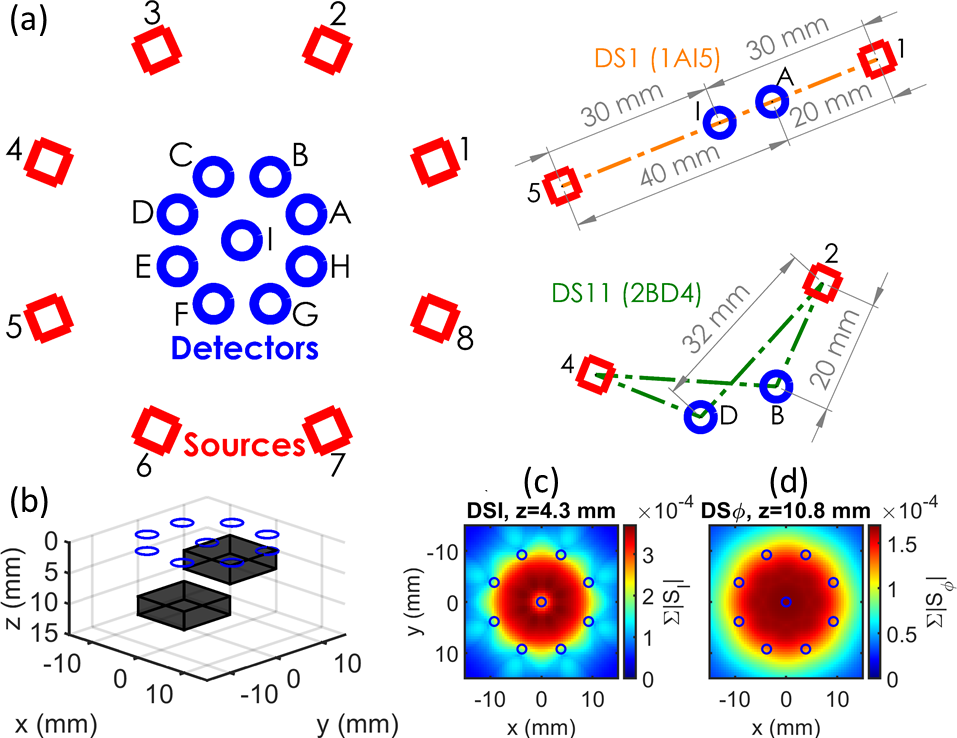
Note 1: This figure can be found as Figure 1 in .
The circular array was used for a phantom imaging experiment in as seen in Figure 1.13. For this reason the array was not built into a PDMS probe but instead held by a 3D printed PLA fixture (Figure 1.14). This fixture suspended the sources and detectors on the surface of a liquid phantom made of 2 % reduced fat milk, II, and W.
During the experiment PDMS solid phantoms were placed in the liquid and their perturbation measured by the array (Figure 1.13(b)). For these experiments only \(m=16\) DS sets were used since the investigation was prior to the invention of the DS discovery algorithm. The two types of DSs which were manually found and used for this study are shown in Figure 1.13(a). The results from this experiment are discussed in subsequent sections.
The Hexagonal Array
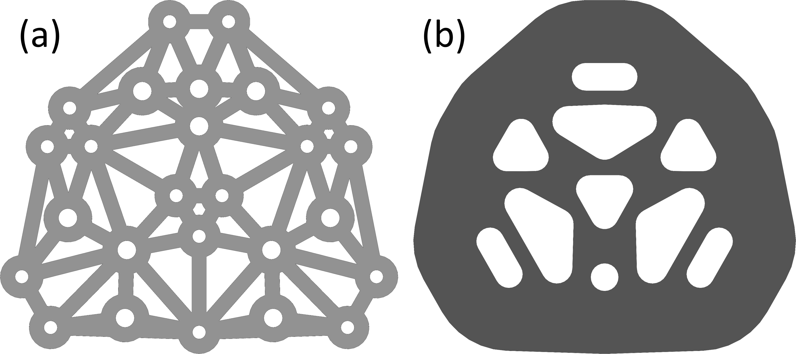
Note 1: This figure can be found as Figure 13 in .
We designed a hexagonal arrangement with the purpose of using DS φ in fNIRS experiments. This with large lateral coverage and prioritization of localization of optical perturbations (Figure 1.11). This goal differs from a goal of spatial resolution (as with the circular array), which would imply the discrimination of two close perturbations, which is not the goal of the hexagonal array.
This arrangement was designed for a total of 16 sources and 10 detectors. We started the design process by manually placing the sources and detectors in various tessellations, and using the DS discovery algorithm to find all the possible DS sets (Listings [lst:SDdis],[lst:SSdis],&[lst:DSdis]). The arrangements with the largest number of overlapping sets and best evaluation (focusing on the goal for each array) results was chosen. The final arrangement was based on a hexagonal tessellation (Figure 1.11). Within this hexagonal arrangement, there are 7 different shapes of DS sets (Figure 1.11(a)(g)) all of which are either rhomboids or trapezoids. The 4 redundant sets of the hexagonal arrangement (Figure 1.11(g)) should be averaged together since their regions of sensitivity are very close to each other, and considering them separately would increase κ of the system. After considering this the hexagonal array contained \(m=27\) DS sets. The whole hexagonal array contains a small range of short and long distances (Figure 1.11(i)-(k)), showing that the position refinement successfully homogenized the array. Laterally, the array simulation full volume was 121 × 121 × 20 mm with 1 × 1 × 10 mm voxels, thus \(v=29,282\).
Now lets consider the ℛ⃗ and 𝒞⃗ for the hexagonal array.
Focusing on the reconstruction map (Figure 1.11(a)), we
notice that the array does not feature homogeneous reconstruction.
Noticeably, the array has high reconstruction values at the center and
below the top 4 detectors (A-D). Additionally,
there are low reconstruction values in various regions surrounding the
center, suggesting compromised sensitivity and poor reconstruction
quality in these regions. Looking at the crosstalk map (Figure 1.11(b)), we notice high values in the
center and below sources 2 and 7, indicating
that some perturbations will be incorrectly reconstructed there. Low
values in the crosstalk map are seen below detectors I and
F, which align with low values in the reconstruction map;
this suggests that the array has blind spots in these locations.
Overall, given our goal of large lateral coverage, the array preforms
reasonably well by covering a rough triangle of approximately
7200 mm2 with the largest weakness being two poor sensitivity
locations below detectors I and F. Keeping
this imaging performance in mind, in a given experiment the array should
be placed such that the best sensitivity area (underneath detectors
A-D) is aligned with the region of
interest.
Second, we examine the Γ and Δ maps. The resolution map (Figure 1.8(a)) shows that the expected lateral FWHM of the arrangement ranges from 20 mm–30 mm in most regions. This value is quite large and shows that the arrangement will not be able to distinguish between two closely spaced perturbations. However, according to our goal, we prioritize localization over resolution. Thus, we look at the localization map (Figure 1.8(b)) for metrics of success. Over almost the entire array, the lateral localization is approximately 5 mm. Therefore, the arrangement achieves both a good localization and a large lateral coverage, along the lines of the design goals.
Finally, we consider the imaging system in terms of SVD. The first \(m\) right singular vectors (\(\harp{V}_1, \ldots, \harp{V}_m\)) show the span of all possible reconstructed images for the hexagonal array (Figure 1.9). For this system, \(m=27\) and thus the reconstruction must fit into 27 degrees of freedom that are shown in these singular vectors. Through careful examination of these maps, we can see where it is possible for the system to reconstruct images and where it is not. Notably, the upper right and left corners of the map cannot be reconstructed well, which is expected since the array cannot have sensitivity there. Aside from the right singular vectors, κ of the system was also evaluated. This can be calculated using the matrix norm or SVD, with SVD having the advantage of giving the option to examine the other singular values as well. For this system, the condition number is on the order of 1 × 1014, suggesting that the system is ill-conditioned. However, this is expected and known for a diffuse optical imaging system. What should be noted is the improvement that was achieved by averaging the redundant DS sets (Figure 1.11(g)) When the system considers these separately (in which case \(m=30\)), the condition number is on the order of 1 × 1015 and the last three singular values approach zero. Therefore, removing the redundant measurements via averaging improved the condition of the system by an order of magnitude.
Physical Realization of Hexagonal Array

Note 1: This figure can be found as Figure 14 in .

Note 1: This figure can be found as Figure 15 in .
The physical hexagonal array was designed around the arrangement in Figure 1.11 since large coverage was desired. This is because the intended us of the array was for fNIRS experiments involving brain activation or CHS oscillations. The array’s design was described in and and its use in and .
To realize the array first, the mesh and hook fabric layers were designed and cut (Figure 1.15). All other components of the array were prefabricated (source and detector fibers). Then, the array was assembled using a mold built from clamped fixtures as described with Figure 1.10. The mold was constructed from 7 fixtures clamped together by 13 bolts such that all 26 fibers were captured by being clamped at the parting lines (Figure 1.15(a)-(b)). The 3 layers were placed within the mold, with the middle layer of hook fabric clamped by a collar which encompassed the whole mold and was attached with 16 bolts (Figure 1.15(c)). The mesh layers (first and third layers) were fixed to the fibers with epoxy. Finally, with all parts held in place and the mold assembled, black PDMS was poured to encapsulate the array (Figure 1.16(d)). Once the PDMS cured, the mold was disassembled, and the array cleaned to finish the build. Given the design, the array can flex to conform to various surfaces including the human head, and the fibers can push through hair given the voids surrounding them. The final array model and assembly is shown in Figure 1.17.
This hexagonal optical array was designed with the specific purpose of applications in fNIRS imaging. This is the first optical array specifically designed for DS φ imaging with FD NIRS on human subjects. Of course, this array also collects SD data, as well as optical I measured with CW NIRS. Therefore, the array may be used in experiments where the DS data (I or φ) is compared to SD data (I or φ) to investigate optimal conditions for imaging with selective 𝒮 to deeper versus superficial tissue. Additionally, the large size of the array and the emphasis on localization would allow for identification of brain activation location in fNIRS protocols. The large array size has the further advantage of broader coverage, which is important for experiments in which multiple neighboring brain areas are activated. Finally, this DS array design features the SC advantages of insensitivity to instrumental drifts and changes in optical coupling with tissue, and calibration-free absolute measurements . This allows for robust measurements weakly impacted by motion or instrumental artifacts as discussed in Chapter [ch:DSintro].
Aside from fNIRS experiments, the array could also be used for non-invasive optical measurements of tissue where preferentially deep sensitivity is desired. Possible applications include breast and skeletal muscle imaging, where the tissue of interest is below a superficial layer of skin and adipose tissue. All the aforementioned applications would take advantage of the array’s DS imaging capability; however, the array could also be implemented in SC mode by combining DS I and φ data. In such a mode, the goal would not be to achieve preferentially deep sensitivity like for phase DS, but rather to measure absolute optical properties. In SC mode, the array could image absolute optical properties of tissue without the need for calibration and with insensitivity to instrumental drifts. The applications of an array designed for DS data collection are numerous.
Dual-Slope Imaging Results
Dual-Slope Imaging on Phantoms
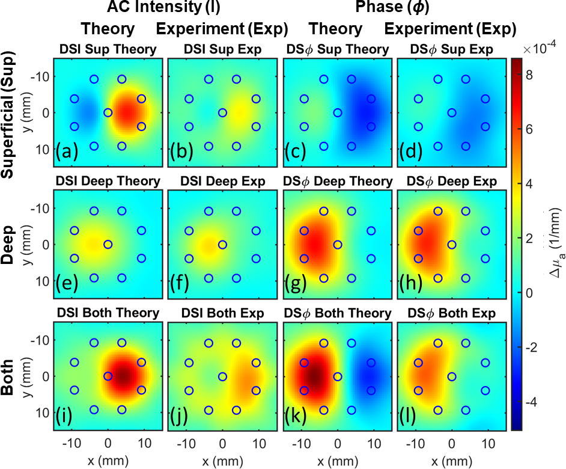
Note 1: This figure can be found as Figure 2 in .
Note 2: Superficial perturbation at (\(5\hat{x}+1.5\hat{z}\)) mm and deep perturbation at (\(-5\hat{x}+11.5\hat{z}\)) mm.
In we presented theoretical and experimental demonstrations of a novel DOI method that is based on the concept of DSs in FD NIRS. We considered the circular array of sources and detectors that collects I and φ data with multiple DS sets. We had recently shown that DS φ data featured a deeper sensitivity with respect to DS I data in when we pursued this work. Therefore, in for the first time, we described a DS imaging approach based on the MP of the 𝒮 for multiple DS data sets. We showed that DS I images are more sensitive to superficial (<5 mm) perturbations, whereas DS φ images are more sensitive to deeper (>10 mm) perturbations in highly scattering media.
To investigate the effectiveness of the novel imaging method based on DSs, we performed experiments on highly scattering liquid phantoms containing solid optical heterogeneous. Liquid phantoms were made from water, 2 % reduced fat milk, and II. For optical inclusions, solid phantoms were constructed from PDMS using RubGls, cII, and TiO2. The μa and the μ′s of the liquid and solid phantoms were measured using scanned MD FD NIRS. We used the Imagent FD NIRS instrument whose operational parameters are stated in Section [ch:shortLong:sec:MDmethExpPara]. The optical probe consisted of 400 μm multi-mode fibers to deliver light, and 3 mm fiber bundles to collect light.
The circular array discussed above was used with \(m=16\) DS sets (Figure 1.13(a)). 8 DS sets are asymmetric linear sets that use ρ of 20 mm, & 30 mm and 30 mm, & 40 mm for the 2 paired SSs. The other 8 DS sets are trapezoidal sets that use ρ of 20 mm, & 32 mm for both paired SSs. The individual sensitivity maps for these DS sets can be found in . Figure 1.13(c)-(d) shows the overall region of 𝒮 associated with all \(m=16\) sets for I (Figure 1.13(c)) and φ (Figure 1.13(d)) at the depth of respective maximum sensitivity (\(z\) = 4.3 mm for I, \(z\) = 10.8 mm for φ). The 𝒮 was summed over all the DS measurements to obtain the overall sensitivity for DS I and DS φ at each voxel \(j\) in these insets.
We considered two perturbations (size: 10 × 10 × 3 mm); a superficial one centered at (\(5\hat{x}+1.5\hat{z}\)) mm, and a deep one centered at (\(-5\hat{x}+11.5\hat{z}\)) mm (see Figure 1.13(b)). In this experiment, we used an optical wavelength of 690 nm, for which the optical properties of the liquid phantom were μa = 0.0093 ± 0.0003 mm and μ′s = 0.85 ± 0.05 mm, and those of the solid phantom were μa = 0.0130 ± 0.0001 mm and μ′s = 0.818 ± 0.004 mm. The optical properties of the liquid phantom resulted in DSF values for I and φ of 7.4 and 1.4, respectively (Appendix [app:dmuaMeas]) . Three cases were considered:
The presence of only the superficial perturbation (Superficial or Sup).
The presence of only the deep perturbation (Deep).
The presence of both superficial and deep perturbations (Both).
For each of these cases the solid phantom perturbation was immersed in the liquid phantom and held on the tip of a glass pipette which was filled with liquid phantom. To achieve the measurement, the perturbation was first placed far from the array during baseline then brought into the desired location by a 3D CNC system.
Here, the goal is not to achieve a quantitative reconstruction of absolute changes in optical properties, but rather to identify and localize (in the lateral \(x-y\) plane) deeper perturbations with minimal interference from shallower perturbations. This goal is consistent with the objective of brain measurements with non-invasive cerebral NIRS. In addition to collecting experimental data, we also present theoretical calculations assuming no scattering perturbations or refractive index mismatch at the perturbation boundary according to the methods in Appendix [app:simSigFromSen]. Additionally, we have investigated the effect of modeling a scattering perturbation so that we may comment on its effect.
For analysis, Δμa from each DS set in the circular array was calculated using the methods in Appendix [app:dmuaMeas] for the various perturbation configurations. From these the 𝒮 was created using the methods in Appendix [app:senMaps] and images of Δμa were recovered using Equation [equ:senMatInverse] with the MP. The image reconstruction utilized Tikhonov regularization with \(a_{tik}=0.01\) . We sought to reconstruct 2D images in the \(x-y\) plane that are mostly sensitive to deeper perturbations, while using the same voxel size in the analysis of I and φ data for a fair comparison of DS I and DS φ images. With this goal in mind, we chose voxels of size 0.5 × 0.5 × 5 mm (superficial layer) and 0.5 × 0.5 × 10 mm (deeper layer) in (\(x\), \(y\), \(z\)), and we only show the \(x-y\) image corresponding to the deeper layer of voxels (\(z\) = 5 mm–15 mm). This layer of voxels includes a portion of the medium that is sensed by both data-types and that does not include the most superficial layer (\(z\) = 0 mm–5 mm). This is in line with the overall goal of DS, which is to suppress signal contributions from superficial layers. Therefore, we do not wish to create images at different depths, we focus on 2D images representative of deep perturbations.
The results of the imaging experiments are shown in Figure 1.18(a)-(l) for I (column 1: theory; column 2: experiment) and φ (column 3: theory; column 4: experiment). In the images of Figure 1.18(a)-(l), the superficial perturbation is on the right, id est positive \(x\) (row 1), the deep perturbation is on the left, id est negative \(x\) (row 2), and both are present in row 3. Overall, there is a good agreement between theory and experiment. The images based on DS I (columns 1-2) show a stronger sensitivity to the superficial perturbation, whereas the images based on DS φ show a stronger sensitivity to the deeper perturbation.
In the presence of only the superficial perturbation, the theoretical DS I map (Figure 1.18(a)) features a greater Δμa than the experimental DS I maps (Figure 1.18(b)) (likely because of different boundary effects in the theoretical and experimental cases), whereas both theoretical and experimental DS φ maps (Figure 1.18(c)(d)) show a small absorption decrease at the perturbation location, due to the negative superficial sensitivity of DS φ . In the presence of only the deep perturbation, the theoretical and experimental maps are in excellent agreement and show a smaller contrast with DS I (Figure 1.18(e)(f)) than with DS φ (Figure 1.18(g)(h)). In this case, the experimental localization error in the lateral plane (\(x-y\)) is 2 mm for both DS I and DS φ (reconstructed maximum and deep true location).
The most significant case is the one where both superficial and deep perturbations are present. This is the case that emulates the presence of superficial confounds (for example, scalp hemodynamics) in the non-invasive study of deeper optical dynamics (for example, cerebral hemodynamics). The absorption maps based on DS I (Figure 1.18(i)(j)) show that they are mostly representative of the superficial perturbation (lateral localization error of the deep object: 12 mm), whereas the maps based on DS φ (Figure 1.18(k)(l)) are mostly representative of the deeper perturbation (lateral localization error of the deep object: 2 mm).
While there is general agreement between theory and experiment in the results of Figure 1.18, we have observed some discrepancy between the absolute values of the reconstructed absorption changes in theoretical and experimental results. We assign these discrepancies to experimental conditions that deviate from the assumptions made in theoretical calculations. These assumptions include:
Lack of scattering contrast for the optical inclusion (in our experiments, the scattering contrast was in the range −9 %–2 %).
n matching at the inclusion/background interface (in our experiments, the absorbing inclusion had \(n\approx 1.4\), while the liquid phantom had \(\acrshort{n}\approx 1.35\) ).
Extrapolated boundary conditions at the flat phantom/air interface (in the experiment, the presence of illumination and collection optical fibers, surface tension effects, and the proximity of the perturbation to the phantom/air boundary resulted in modified boundary effects).
To investigate the most likely source of the discrepancy between theory and experiment, we performed theoretical calculations that included scattering perturbations consistent with the experimental conditions. We found that the scattering mismatch alone cannot explain the difference between theory and experiment. Therefore, we expect that the discrepancy is likely due to the second and third points above, which refer to the unknown n mismatch and to the inevitable variability of geometric conditions that cannot be fully controlled within the scope of this experiment. We have also opted to present theoretical results without modeling a scattering perturbation to emphasize our focus on measurements of absorption perturbations. However, we stress that our goal here is not to achieve reconstruction of absolute optical properties but instead to:
Correctly localize perturbations in the \(x-y\) plane.
Achieve a stronger relative sensitivity to deeper versus shallower perturbations.
Correctly identify the direction of the absorption change caused by the perturbation (increase or decrease).
The key message is that DS φ features a deeper sensitivity and is less impacted by superficial perturbations than DS I. This feature is exploited for imaging in Figure 1.18, which shows that DS φ images selectively reproduce deeper perturbations (see Figure 1.18(k)(l)), whereas DS I images are more strongly affected by superficial perturbations (see Figure 1.18(i)-(j)). Of course, one can take advantage of the complementary information of DS I and DS φ images to extract information on both superficial and deep perturbations.
In Vivo Dual-Slope Imaging
Dual-Slope Imaging of Muscle
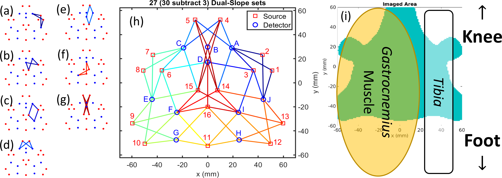
Note 1: This figure can be found as Figure 1 in .
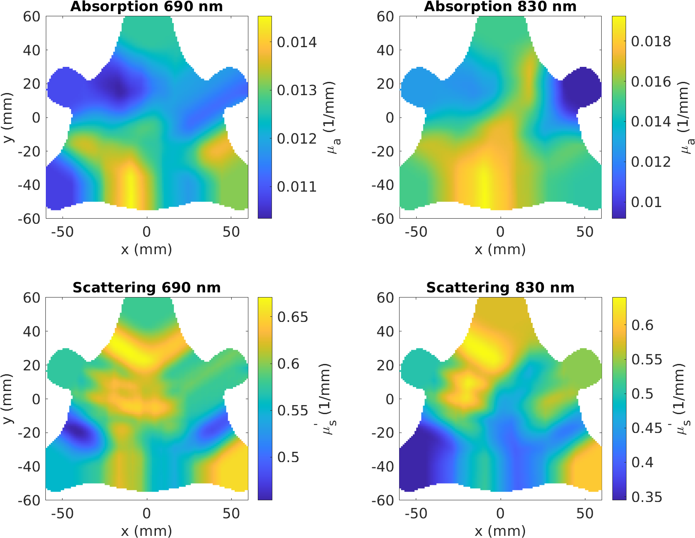
Note 1: This figure can be found as Figure 2 in .
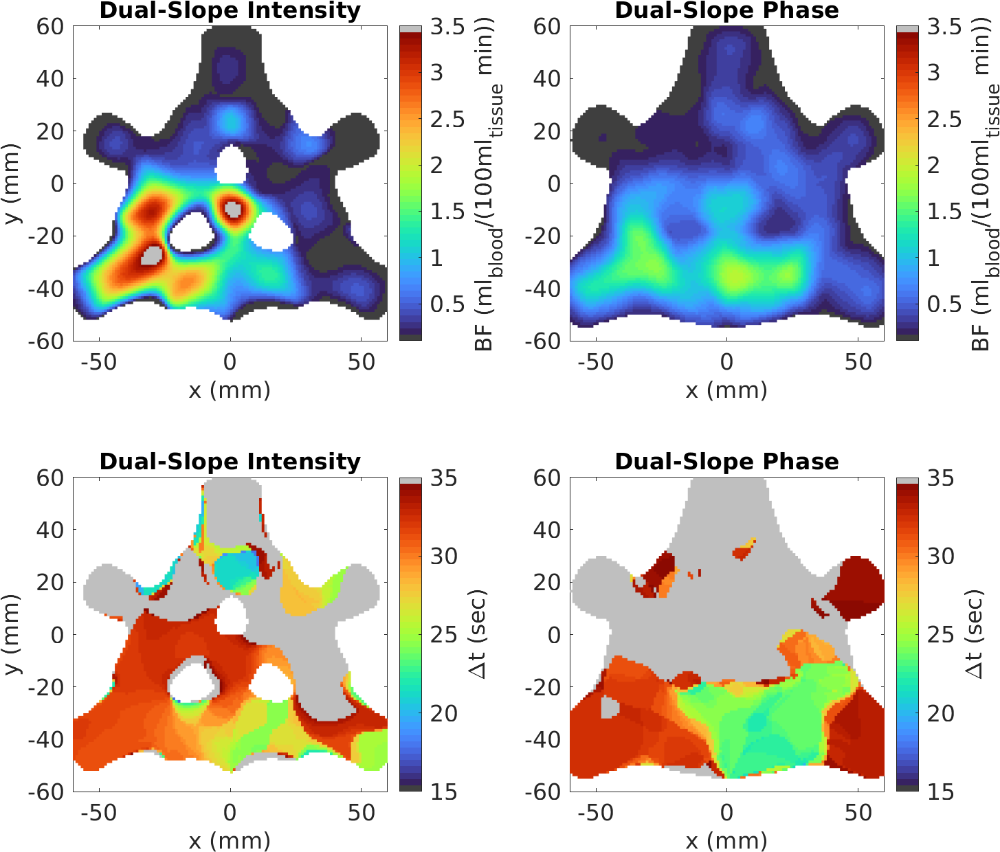
Note 1: This figure can be found as Figure 3 in .
In we utilized the hexagonal array (Figure 1.17) to measure maps of absolute optical properties in human skeletal muscle, and muscle hemodynamics during a VO. In each case, spatial maps were created. The maps of baseline absolute optical properties showed higher μ′s in connective tissue and higher μa in muscle tissue. The analysis of hemodynamics found a greater blood accumulation during VO in muscle. Overall, muscle hemodynamics were shown to be spatially variable over a large area, suggesting the importance of imaging (as opposed to single-location) measurements. The preliminary data on human subjects with this new DS imaging array pave the way for applications in fNIRS for mapping brain activation.
To test this array on hemodynamic measurements, a simple muscle experiment was carried out on one human subject. The subject gave their informed consent according to the Tufts University IRB prior to the experiment. The array was placed over the subject’s left gastrocnemius muscle and tibia (Figure 1.19(i)). Then the following protocol was conducted: 5 min baseline, 2 min VO, 2 min rest, 2 min VO, 2 min rest, 2 min VO, and 2 min baseline. We performed a total of 3 2 min long VOs, each achieved with a pneumatic thigh cuff wrapped around the subject’s left thigh (same side as the array) and inflated to a pressure of 60 mmHg.
The array may be used in two modes:
SC for measurement of absolute optical properties.
DS for measurement of Δμa with only DS I or DS φ.
To create a spatial map of the absolute μa and μ′s the array was analysed in SC mode on the baseline data (averaged over time) with the iterative recovery methods in Appendix [app:absOptPropMeas]. This resulted in a measurement of μa and μ′s for each of the \(m=27\) sets in the hexagonal array. To create a visual representation, the values were assigned to the spatial coordinate corresponding to the centroid of the optode sets they were derived from. Then a spatial map was created by interpolating the values between the points in two-dimensions. This resulted in an image of absolute μa and μ′s beneath the array.
To use the array in DS mode, the DS derived Δμa was found for each time-point during the experiment using the methods in Appendix [app:dmuaMeas]. Then, a map of Δμa was reconstructed using methods previously described above via the MP and Equation [equ:senMatInverse] . The 𝒮 of the array was calculated for two layers of voxels (one from \(z\) = 0 mm–5 mm and the other for \(z\) > 5 mm). Then 𝒮 was inverted on the Δμ⃗a DS data and the reconstructed image for the second layer presented. From this method, an image of Δμa for 2 λs was calculated for each time-point during the experiment. This was then converted to an image stack of ΔD and ΔO using Appendix [app:recChrom].
During the VO, the maximum rate of blood accumulation (from a linear fit of ΔT) was calculated for each voxel, as well as the time of this maximum rate (defined by the center of the linear fit where the rate is the slope of the fit). This was achieved by implementing a linear Savitzky–Golay filter with a support length equal to 10 s to each temporal vector in the image stack. Then the maximal slope (and its central time) of ΔT (from the Savitzky–Golay filter) for each VO was found and averaged across the three VOs. Finally, the maximal slope of ΔT was converted into the BF units of mLblood 100−1 mLtissue min−1. This resulted in spatial maps of blood accumulation maximum (in units of BF) and delay time of the maximum (\(\Delta t\) from the VO onset) for both DS I and DS φ.
Figure 1.20 shows the results from the DS array in SC mode, which retrieved maps of absolute optical properties without the need for calibration. Then, Figure 1.21 presents the hemodynamic data derived from the array in DS mode. Dynamic data is the mean of all three VOs.
Examining the spatial maps (Figure 1.20) of absolute optical properties and comparing them to the placement of the array (Figure 1.19(i)), one can see some correspondence between values and anatomy. Specifically, the parts of the array measuring the tibia and tendons connecting to the knee (\(y\) > 20 mm) exhibit higher values of scattering. Also, the portion of the array probing the largest part of the muscle (\(y\) < −20 mm ] and \(x\) < 0 mm) shows higher values of absorption. This is consistent with the hypothesis that connective tissues exhibit higher scattering while muscle exhibits higher absorption. These results suggest the viability of this array in measuring spatial maps of absolute optical properties.
Next, the hemodynamic data (Figure 1.21) collected with the array can be evaluated. Note that the highest rate of blood accumulation occurred in the part of the array where the largest part of the muscle was probed (Figure 1.19(i)). Additionally, the accumulation showed spatial variation in delay time. Both of these suggest that the hemodynamics during a VO may have high spatial variability. Interestingly, this spatial variation was consistent between the 3 repeated VOs (average shown). Aside from the spatial variation of hemodynamics, differences between DS I and DS φ may also provide information about the depth of these changes. Understanding these differences is still an area of active research. Regardless, this experiment showed the possibility of using this novel DS imaging array for hemodynamic measurements.
Dual-Slope Imaging of Brain
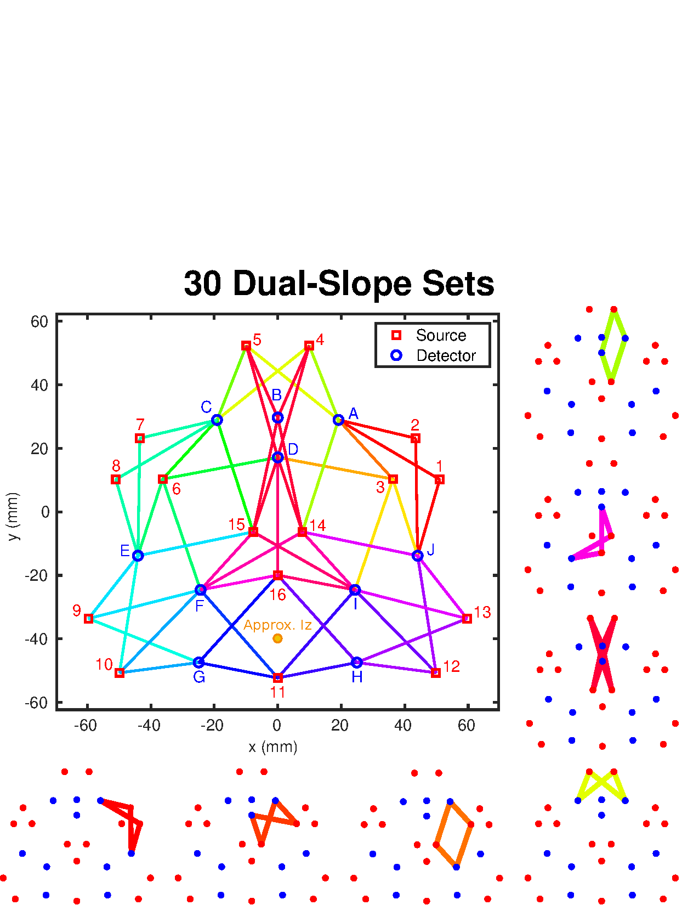 |
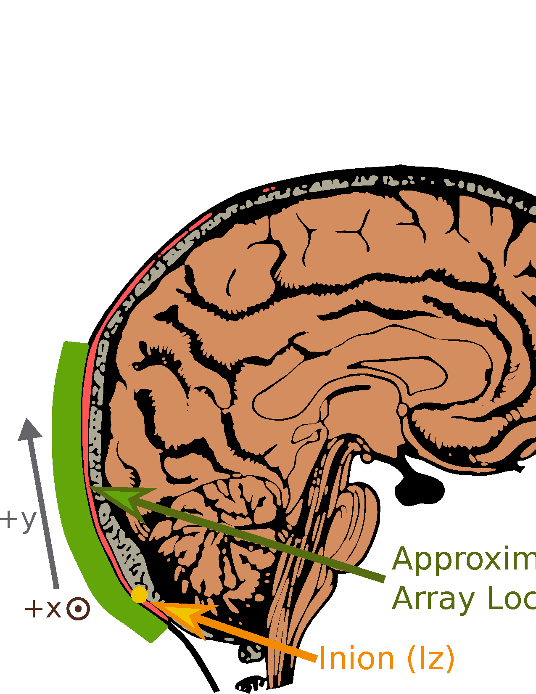 |
Note 1: This figure can be found as Figure 1 in .
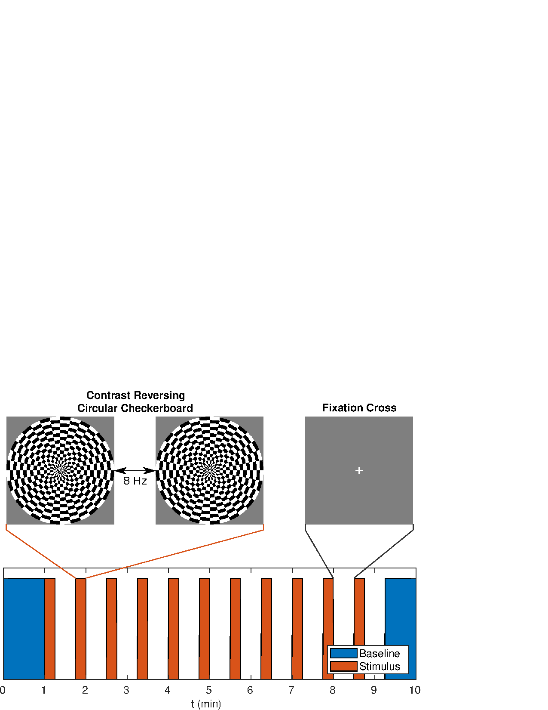
Note 1: This figure can be found as Figure 2 in .
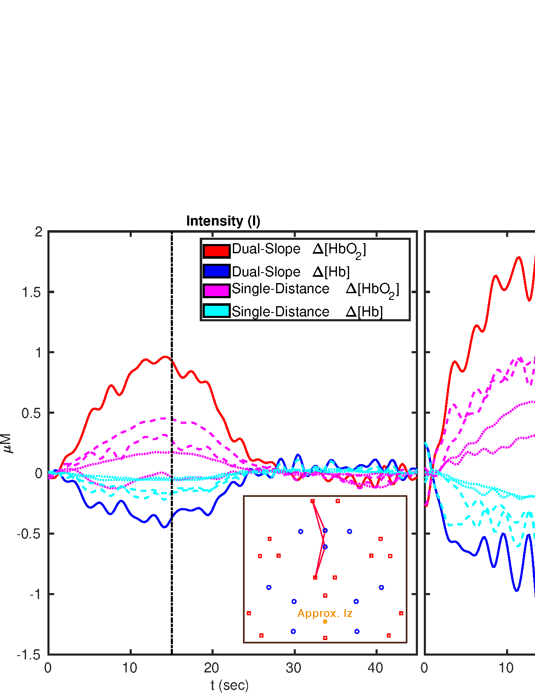
Note 1: This figure can be found as Figure 4 in .
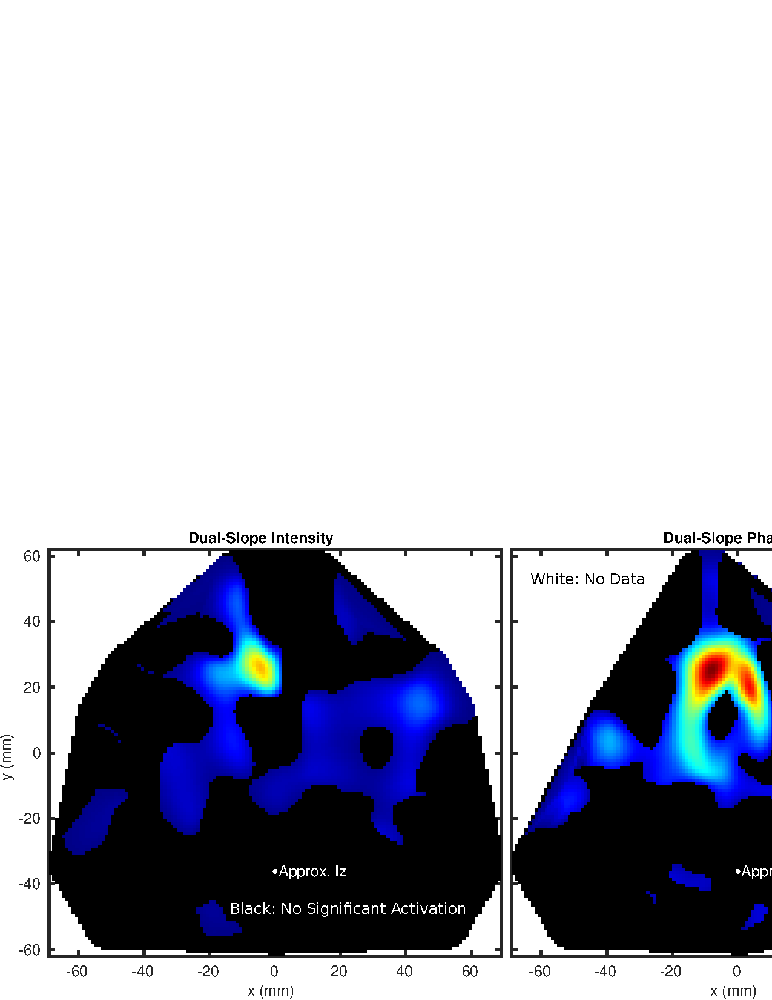
Note 1: This figure was presented in as part of the talk.
In we demonstrated the ability of the DS method to measure brain activation during a visual stimulation protocol. The measured hemodynamic traces associated with visual stimulation exhibited a larger amplitude when they are derived from DS versus SD data, and from φ versus I data. In particular, the functional hemodynamics obtained from DS φ data feature the largest amplitude. These results indicate the greater sensitivity to brain tissue achieved by DS versus SD data, and by φ versus I data. The conclusion of this work is that DS I (in CW fNIRS) and DS or SD φ (in FD fNIRS) appear to be most effective for functional brain measurements, with the significant practical advantage offered by the minimal sensitivity of DS measurements to a variety of artifacts and preferential 𝒮 to deep tissue.
In this work the hexagonal DS array from the above sections was utilized. It realized \(m=30\) DS sets in this work, each made up of 4 SD sets,3 two short (approximately 25 mm]) and two long (approximately 37 mm), see Figure 1.22[Left]. The Imagent was again utilized with the same operating parameters stated in Section [ch:shortLong:sec:MDmethExpPara], and a sampling frequency of 5 Hz. The array was placed over on the back of the subject’s head such that the top of the array was over the visual cortex (Figure 1.22[Right]).
The visual stimulation was conducted in accordance with the Tufts University IRB. It consisted of a 1 min of baseline, followed by the experimental period. Then the experimental period contained 11 stimulus periods each consisting of 15 s of a 8 Hz contrast reversing circular checkerboard and 30 s of rest. The experiment ended with a 45 s baseline for a total time of 10 min. Figure 1.23 shows the organization of the protocol as well as the visual stimuli presented to the subject. Data from one such experiment session and one subject is presented was presented in .
For an absolute measurement, the array was again used in SC mode on the averaged baseline data using the iterative recovery method in Appendix [app:absOptPropMeas]. Absolute optical properties were found and the complex effective path-lengths calculated , which were required to calculate the DPFs and DSFs for the relative measurement as described in Appendix [app:dmuaMeas]. For image reconstruction 𝒮 was calculated using Appendix [app:senMaps] and inverted with the MP and Equation [equ:senMatInverse].
For a relative measurement, ΔO and ΔD traces were calculated for each SD and DS set from Δμa per the methods in Appendix [app:recChrom]. The signals were low-pass filtered to 0.5 Hz and folding averaged across the 11 activation periods.4 An example DS set for these data was chosen and is presented to compare SD and DS during visual stimulation.
Figure 1.24 shows the filtered and folding averaged DS & SD hemodynamic data for the visual stimulation protocol. The presented set was above the left occipital lobe (Figure 1.22). The figure shows both I and φ data on the left and right, respectively, with the plots being on the same scale. DS traces are presented in solid red or blue for ΔO and ΔD, respectively. Meanwhile, short SD traces are dotted while long SDs are dashed with colors of magenta and cyan for ΔO and ΔD, respectively.
The characteristic brain activation signal is an increase in ΔO and a decrease in ΔD which is indicative of a increase in BF . In all measurement types, including SD short, φ data exhibited this characteristic brain activation behavior while the same is not true for I. Additionally, DS data-types always showed a larger amplitude response compared to SD. Furthermore, comparing each φ trace to its corresponding I trace it can be seen that amplitude of the change in ΔO or ΔD was always larger for φ. This is most striking when examining the short SDs. For I one of the short SD ΔOs does not increase while corresponding trace for φ does increase, where it is worth pointing out that the physical optodes are the same in this situation and the difference is just from the different data-type. The same is true for ΔD, where the short SDs do not change significantly for I but do have a noticeable decrease for φ.
Finally, Figure 1.25 shows the first example of DS imaging on the human brain during a fNIRS protocol. For this activation protocol it is expected that the visual cortex will show a BF increase and thus activation in the image. Given the placement of the array the visual cortex was under the upper port of the array. Therefore the DS activation image in Figure 1.25 is consistent with the expectation since it shows large activation amplitude in the upper center portion of the array. Furthermore, DS φ has a larger activation contrast compared to DS I which is consistent with the hypothesis that φ data is more brain specific. These results are bolstered by the fact that no significant change in heart rate was observed, thus the change due to visual stimulation should really have been brain specific and not systemic.
Overall, the results herein suggest that DS or φ data exhibit higher amplitude activation than SD or I, respectively, for both ΔO and ΔD. Further, these preliminary traces suggest that if these DS array data were applied to imaging DS and φ data derived images would exhibit higher contrast compared to SD and I, respectively. This is consistent with DS’s expected preferentially deep sensitivity shown in Chapter [ch:DSintro], which has been observed during systemic blood pressure oscillations and while imaging perturbations within a phantom .
Listings
Acronyms: MathWorks MATrix LABoratory (MATLAB).
Available at:
https://github.com/DOIT-Lab/DOIT-Public/tree/master/Dissertations/GilesBlaney2022/code
Acronyms: MathWorks MATrix LABoratory (MATLAB).
Available at:
https://github.com/DOIT-Lab/DOIT-Public/tree/master/Dissertations/GilesBlaney2022/code
Acronyms: MathWorks MATrix LABoratory (MATLAB).
Available at:
https://github.com/DOIT-Lab/DOIT-Public/tree/master/Dissertations/GilesBlaney2022/code
Acronyms: MathWorks MATrix LABoratory (MATLAB).
Available at:
https://github.com/DOIT-Lab/DOIT-Public/tree/master/Dissertations/GilesBlaney2022/code
These source-detector distance (ρ) parameters are primarily related to the Dual-Slope (DS) constraints in Section [ch:DSintro:sec:DSoverview].↩︎
These dynamical parameters are not critical in their exact value, but are chosen to ensure system stability.↩︎
Dual-Slope (DS) sets may share Single-Distance (SD) sets so the number of SD sets is less than or equal to the number of DS sets times four, in general.↩︎
During the folding average the data were de-trended so that the first and last 2 s of data have averaged of zero to remove slow drifts expected to be present in Single-Distance (SD).↩︎